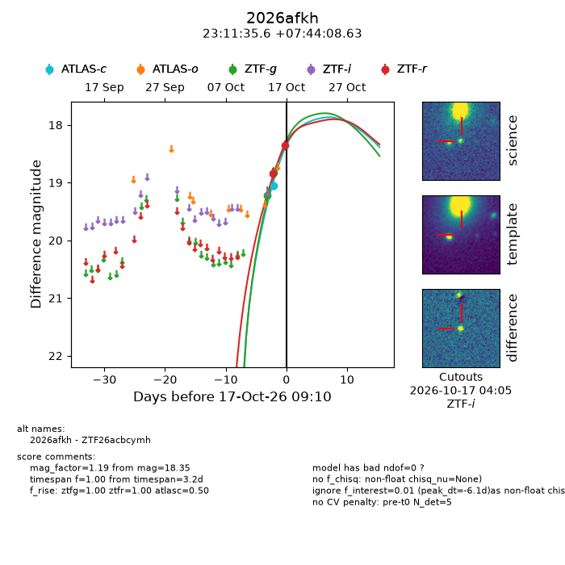
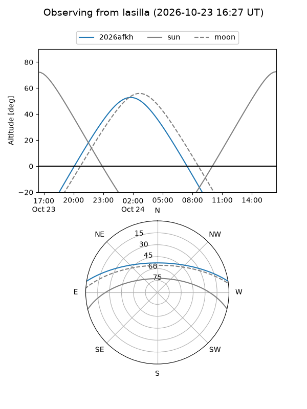
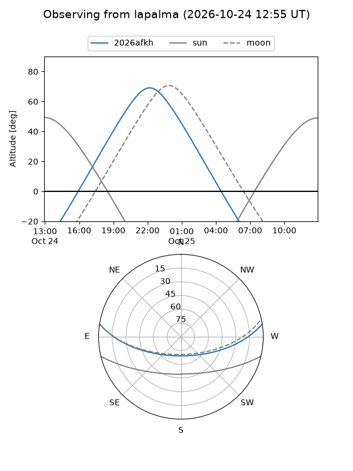
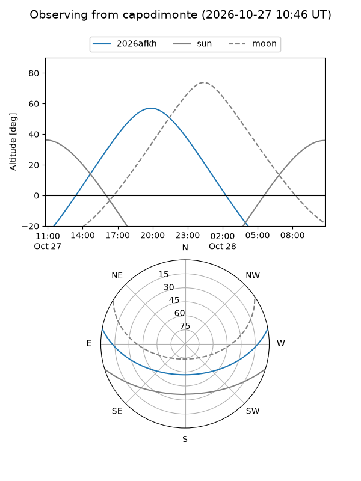
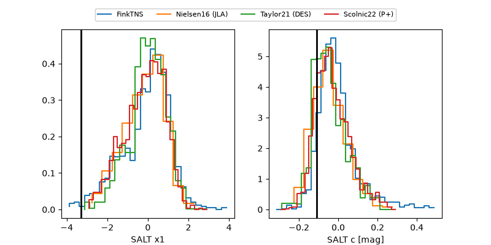

2026afkh
Target 2026afkh at 2026-10-17 09:11
Aliases and brokers:
FINK-ZTF: ztf.fink-portal.org/ZTF26acbcymh
Lasair-ZTF: lasair-ztf.lsst.ac.uk/objects/ZTF26acbcymh
ALeRCE-ZTF: alerce.online/object/ZTF26acbcymh
YSE-PZ: ziggy.ucolick.org/yse/transient_detail/2026afkh
TNS name: wis-tns.org/object/2026afkh
Direct TNS query: direct search
alt names
ZTF26acbcymh (ztf,fink_ztf)
2026afkh (tns,yse)
Coordinates:
equatorial (ra, dec) = 347.8985,+7.73573
equatorial (HMS+DMS) = 23:11:35.65,+07:44:08.63
galactic (l, b) = (84.6290,-47.57313)
Flags:
peak dt: -6.1
Photometry:
last atlasc=19.05, ztfg=18.83, ztfr=18.35
1 atlasc, 2 ztfg, 2 ztfr detections
Lightcurve

Visibility



Additional plots
